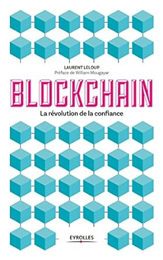

Blockchain : La révolution de la confiance
Écrit par : Laurent Leloup
Publié le : 17 août 2017
Numéro ISBN13 : 978-2212566659
Nombre de page : non renseigné
Langue : Français
Résumé :
"Deuxième révolution numérique", "ubérisation ultime", "machine à confiance"... la blockchain laisse présager une
révolution des usages comparable à celle portée par l'Internet dans les années 90.
La promesse de la blockchain est en effet majeure : des transactions instantanées à des coûts minimes et sans organe central de contrôle.
Cette technologie a le potentiel de totalement changer les règles du jeu dans de nombreux secteurs économiques, à commencer par le
système bancaire.
Comment se préparer ? Laurent Leloup décrypte de façon très pédagogique le fonctionnement d'une blockchain, les expériences en cours,
les perspectives. Surtout, il pointe les questions à se poser et aide à diagnostiquer les opportunités liées à la blockchain dans chaque
secteur.
Au-delà des implications économiques, c'est une profonde transformation sociétale qui s'annonce. Car la blockchain est avant tout une
révolution de la confiance, portée non plus par un tiers de confiance - banquier, notaire, etc. -, mais par un système décentralisé et
partagé. Un nouveau monde se profile.